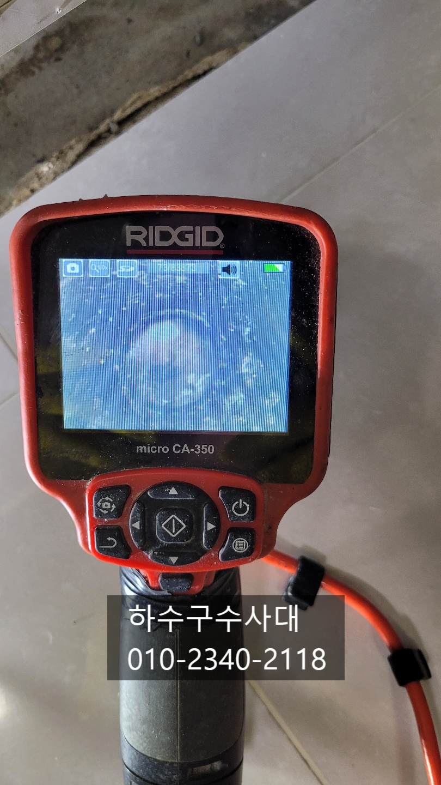
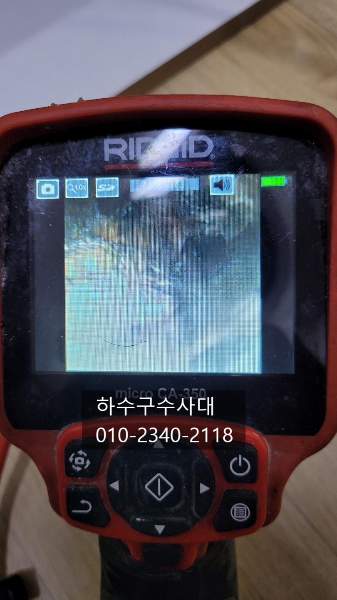
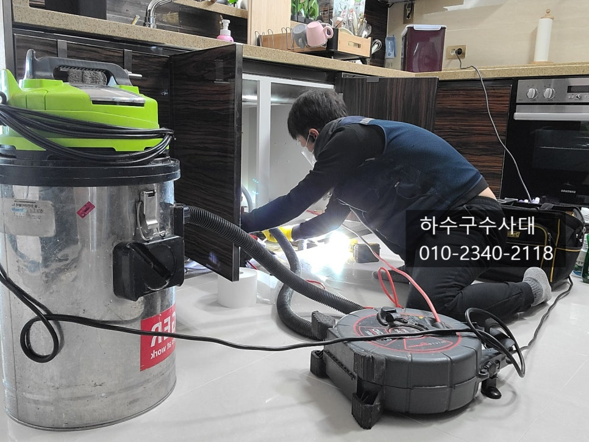
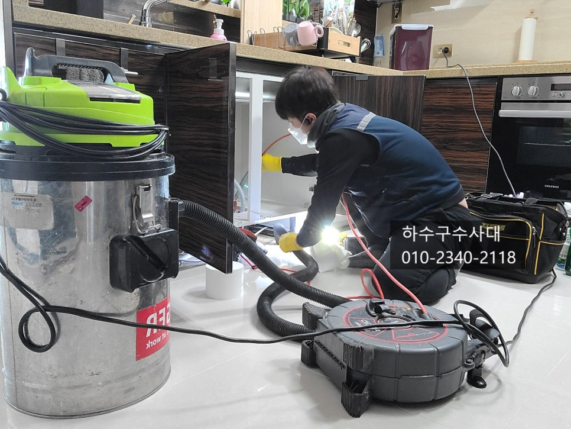
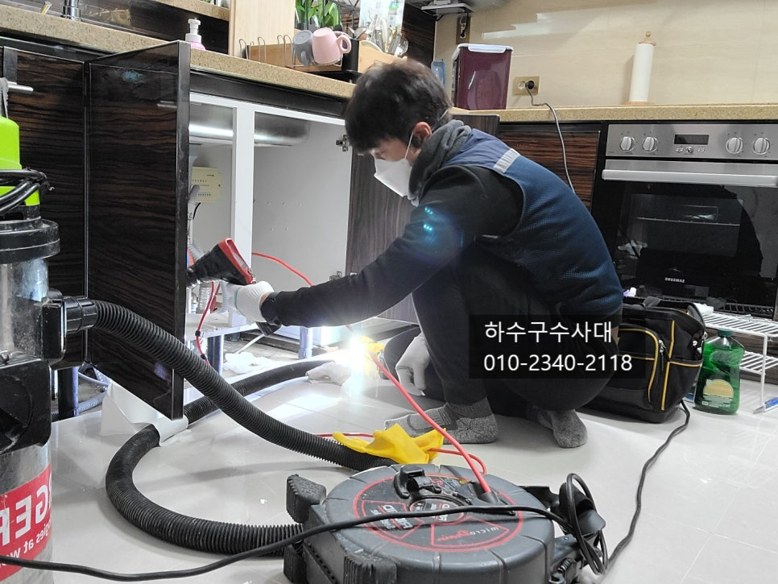

🏠 안현동오수관역류 연성동 고압세척비용 배관전문
서울 성동구 싱크대막힘 전문 시공 후기

📋 작업 개요
- 위치: 서울 성동구, 성동구, 서울
- 서비스 유형: 싱크대막힘, 하수구막힘, 배관막힘, 역류해결, 뚫는업체, 배관청소, 고압세척
- 작업 일시: 2025. 2. 14. 22:36
- 업체명: 하수구수사대 (010-5615-2118)
🔍 문제 상황
기흥구싱크대막힘 동백동 구성동 보라동 하수구뚫음
안녕하세요
"하수구수사대"입니다.
날씨가 점점 추워지는데 모두
감기조심하시고 건강에 유의하시기 바랍니다^^
우리가 가정에서 가장많이 사용하는 공간인
주방에서 물 배수가 잘 되지않거나 배관에서 역류하게
되어 물을 쓰지 못하면 많은 불편함을 느끼실거에요.
오늘 "하수구수사대"를 불러주신 고객님 집도
마찬가지 였는데 인근에 있는 업체를 불러서
스프링으로 2시간 작업을 하였지만 배관에
물이 고여있고 물을 한번에 받아서 내리면
역류하는 증상을 보였답니다.
인근에 있는 업체 사장님께서 하수구전문업체를
불러보시라고 해서 저희 "하수구수사대"에 연락을
주셔서 확실하게 해결해 드린 작업내용을 리뷰해 보겠습니다^^
싱크대는 음식물과 기름성분이 흘러나가기 때문에
배관에 기름으로 막히는 경우가 대부분이고 배관이 동맥경화처럼

🔎 원인 분석
💡 전문가 진단: 하수구수사대010-2340-2118
기름덩어리고 좁아져 있는상태라 스프링으로 구멍만 내서는
완벽하게 해결이 되지 않습니다.
내시경카메라로 배관내부를 보니 기름덩어리가 아직도
배관에 많이 붙어있는것을 확인할수 있었는데요
스프링장비로는 배관을 깨끗하게 만들기는 어렵다는걸
다시 한번 알게되었습니다.
하지만 스프링장비가 유용하게 사용될때도 많아
하수구설비하시는 사장님들께서 대부분 가지고 다니는
장비라고 생각하시면 됩니다 .물론 저도 항상가지고 다니고 있답니다^^
내시경카메라는 고가지만 필수장비인데요 막힘의 원인과
추후 예방을 위해서는 내부를 보고정확하게 진단해야합니다.
간혹 배관을 통수를 시켜놓고 내시경카메라로 확인을 해보면
생각하지도 못한 이물질이 들어가 있거나 배관이 일부 또는 전체가
무너져 있는경우도 있답니다. 이를 보지못하고 물만 나가는걸 확인하고
마무리를 한다면 또 막힐 확률은 높아 고객과 설비업체 서로 피곤한
상황이 벌어지기 때문에 꼼꼼하게 작업을 해야합니다^^
내시경을 보면서 배관에 붙어있는 기름을 제거해주는
작업을 진행중인데요 와이어앞에 체인이 회전을 하면서

🔧 작업 과정
배관에 붙은 기름덩어리를 제거하고 있습니다.
기름덩어리가 얼마나 오래됐느냐에 따라 강도가 틀려지는데
오래될수록 딱딱함이 돌같아서 이러한 기름덩어리는 최대한
밖으로 흡입하여 빼주는 것이 좋아요.
잘 부숴지지도 않고 덩어리채 떨어지기 때문에
나가면서 막힐 확률도 있고 메인관에서 막히는 경우도 생긴답니다.
나름대로 하수구에 기름을 버리지 않으려고
한다고 많이들 말씀하시는데요 보통 하수구배관에
기름이 쌓이는 이유가 구배가 좋지 않아 쌓이는 경우가
대부분입니다. 구배 즉 기울기가 좋지않아 물이 고여있고
고여있는 물이 기름이 조금씩 배관에 붙으면서 오랜시간이
지나면 딱딱하게 굳게 되는 것이죠.
가장 효과적인 예방방법은 물을 충분히 흘려보내고 한달에 한번이든
두번이든 펑크린을 배관에 넣어주는 것인데요
구배가 좋지않은 곳에 펑크린액이 머무르면서 붙어있는
기름을 녹여주는 역활을 하게 됩니다.
하지만 주의할점은 이미 딱딱하게 기름이 덩어리가 된것은
녹지않고 오히려 배관에서 일부분이 떨어져 막힘 증상이
심해질수 있답니다.
배관에 기름덩어리가 쌓이게되면 악취도 심해지는데요
싱크대하부장을 열면 심한 악취가 나는곳도 있는데
이는 배관에 음식물이 썩어 악취가 올라온다고
보시면 됩니다. 간혹 싱크대호스에서도 음식물이 썩어
나는경우도 있으니 오래된 호스는 교체해주시는것도 좋은 방법입니다.
배관세척이 끝나고 내시경카메라 확인을 해보니
기름찌꺼거 하나없이 깨끗하게 청소가 되었습니다.
이제 관리만 잘 하신다면 앞으로 평생 막힐일은
없으니 안심하셔도 되겠어요^^


✅ 작업 완료
항상 싱크대작업 마무리는 물을 받아서 내려보는
테스트를 하는데요 이유는 싱크대호스나 연결부위에서
물이 새지는 않는지 확인을 해주기때문이에요.
저희 "하수구수사대"는 수도권전지역에서
활동중이며 하수구전문업체로 원인파악부터 해결까지
완벽하게 처리해드리고 있으니 언제든지 연락주세요^^
하수구수사대
010-2340-2118




⚠️ 주방 싱크대 배관 막힘 예방 수칙
- ✅ 기름기가 묻은 식기나 프라이팬은 설거지 전 키친타올로 반드시 기름때를 닦아내세요.
- ✅ 주기적으로 싱크대 개수대에 뜨거운 물을 가득 받아 한 번에 내려 배관 내부 기름을 씻어내세요.
- ✅ 배수구 거름망을 미세한 필터로 사용하시고 음식물 찌꺼기가 틈으로 새어 들지 않게 관리하세요.
- ✅ 베이킹소다와 식초를 뜨거운 물과 함께 일주일에 한 번씩 부어주면 배관 살균과 막힘 예방에 좋습니다.
💡 핵심 정리
- 확실한 장비 작업(내시경 점검 및 샤프트 스케일링)으로 원인을 뿌리 뽑습니다.
- 작업 후 1년 이내에 동일한 부위 재발 시 100% 무상 A/S 서비스를 보장합니다.
- 서울 · 경기 · 인천 전 지역에 24시간 언제든 긴급 출동할 수 있도록 항시 대기 중입니다.
❓ 자주 묻는 질문 (FAQ)
🚨 서울 성동구 싱크대막힘 문제로 고민이신가요?
정확한 원인 진단과 확실한 시공으로 재발 없는 해결을 약속드립니다.
24시간 긴급 출동 | 서울 · 경기 · 인천 전지역 | 1년 내 재발 시 무상 A/S